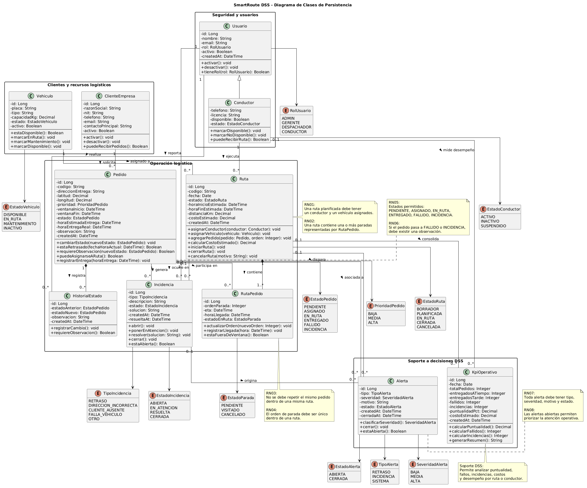

Materia: Sistemas de Información II
Proyecto: SmartRoute DSS
Caso: FlashLogistics - El Caos de la Distribución
Squad: Cacatúas
Integrantes: Alex Saul Fernández Valdez; Wilber Perez Subelza
Repositorio GitHub: https://github.com/Alex-Fernandez-2003/Actividad-2-SDI-II.git
GitHub Project / Kanban: https://github.com/users/Alex-Fernandez-2003/projects/1/views/1
Fecha: 16 de junio de 2026
La Actividad Práctica 5 tiene como objetivo diseñar la arquitectura de persistencia de SmartRoute DSS, el sistema de soporte a la decisión propuesto para resolver el caso FlashLogistics.
Un DSS no solo debe registrar datos; debe estructurarlos de forma íntegra, relacional y útil para la analítica operativa. En el caso de FlashLogistics, los datos deben permitir responder preguntas críticas como:
Por ello, esta actividad transforma el refinamiento de historias de usuario y los modelos UML anteriores en una propuesta de persistencia robusta.
| Elemento | Enlace |
|---|---|
| Repositorio GitHub | https://github.com/Alex-Fernandez-2003/Actividad-2-SDI-II.git |
| GitHub Project / Kanban | https://github.com/users/Alex-Fernandez-2003/projects/1/views/1 |
| Carpeta de modelos | capturas/ |
| Script SQL inicial | database/script-SQL.sql |
La arquitectura de persistencia parte de las historias críticas refinadas en la Actividad 4:
| ID | Historia crítica | Entidades principales derivadas |
|---|---|---|
| HU03 | Asignar pedidos a ruta, conductor y vehículo | pedidos, rutas, ruta_pedidos, conductores, vehiculos |
| HU05 | Actualizar estado de cada pedido | pedidos, historial_estados, incidencias, usuarios |
| HU08 | Recibir alertas de retrasos e incidencias | alertas, incidencias, rutas, pedidos, kpi_operativos |
Estas historias representan el núcleo operativo y analítico del sistema. Por esa razón, el modelo de datos se diseñó para soportar planificación, trazabilidad, alertas y análisis de indicadores.
El diagrama de clases de persistencia modela las entidades principales de SmartRoute DSS, incluyendo atributos, métodos de negocio, relaciones y multiplicidades.

| Clase | Responsabilidad |
|---|---|
Usuario |
Representa a los usuarios autenticados del sistema y sus roles. |
Conductor |
Representa al usuario operativo encargado de ejecutar rutas. |
ClienteEmpresa |
Representa a las empresas clientes que reciben pedidos. |
Vehiculo |
Representa los vehículos usados para ejecutar rutas. |
Pedido |
Representa una entrega solicitada por un cliente. |
Ruta |
Agrupa pedidos y define conductor, vehículo y planificación. |
RutaPedido |
Entidad intermedia que ordena pedidos dentro de una ruta. |
HistorialEstado |
Registra cada cambio de estado de un pedido. |
Incidencia |
Registra problemas ocurridos durante la ejecución de una entrega. |
Alerta |
Representa señales operativas para la toma de decisiones. |
KpiOperativo |
Guarda métricas consolidadas para análisis DSS. |
Se utiliza herencia entre Usuario y Conductor porque un conductor es un usuario del sistema con información adicional para la operación logística.
Usuario <|-- Conductor
Esto permite mantener datos comunes en Usuario, como nombre, email, rol y estado, mientras que Conductor agrega datos específicos como licencia, teléfono y disponibilidad.
Se utiliza asociación entre ClienteEmpresa y Pedido.
ClienteEmpresa "1" -- "0..*" Pedido
Una empresa cliente puede tener muchos pedidos, pero cada pedido pertenece a una sola empresa cliente.
Se utiliza composición entre Ruta y RutaPedido.
Ruta "1" *-- "1..*" RutaPedido
La composición se justifica porque los registros de RutaPedido no tienen sentido sin una ruta. Si una ruta se elimina o se cancela definitivamente, sus paradas asociadas pierden su contexto operativo.
Una ruta debe tener un conductor y un vehículo asignado.
Conductor "1" -- "0..*" Ruta
Vehiculo "1" -- "0..*" Ruta
Un conductor puede participar en muchas rutas a lo largo del tiempo, pero una ruta planificada tiene un conductor responsable. Lo mismo aplica para vehículos.
Pedido "1" *-- "0..*" HistorialEstado
El historial de estado pertenece al pedido. Cada cambio de estado existe para explicar la evolución de ese pedido.
Pedido "1" -- "0..*" Incidencia
Pedido "1" -- "0..*" Alerta
Incidencia "0..1" -- "0..*" Alerta
Un pedido puede tener incidencias y alertas. Una incidencia puede generar una o más alertas operativas para el dashboard.
| Nº | Regla de negocio | Implementación en persistencia |
|---|---|---|
| RN01 | Un pedido no puede duplicarse dentro de una misma ruta. | UNIQUE(ruta_id, pedido_id) en ruta_pedidos. |
| RN02 | Una ruta debe tener conductor y vehículo. | FK obligatorias en rutas. |
| RN03 | Un conductor inactivo no debe recibir rutas nuevas. | Validación por estado y disponible. |
| RN04 | Un vehículo en mantenimiento no debe asignarse a rutas. | Campo estado con restricción CHECK. |
| RN05 | Todo cambio de estado debe quedar auditado. | Tabla historial_estados. |
| RN06 | Si un pedido entra en estado Fallido o Incidencia, debe existir observación. | Restricción y validación en historial_estados / incidencias. |
| RN07 | Las alertas deben tener severidad. | Campo severidad con CHECK. |
| RN08 | Las métricas deben permitir análisis por fecha, ruta y conductor. | Tabla kpi_operativos. |
El modelo relacional transforma las clases persistentes en tablas normalizadas con claves primarias, claves foráneas, dominios y restricciones.
modelo-relacional.md
database/script-SQL.sql
| Tabla | Propósito |
|---|---|
usuarios |
Usuarios autenticados del sistema. |
conductores |
Información operativa de conductores. |
clientes_empresas |
Empresas clientes de FlashLogistics. |
vehiculos |
Vehículos utilizados en la operación. |
pedidos |
Pedidos o entregas solicitadas por clientes. |
rutas |
Rutas planificadas para despacho. |
ruta_pedidos |
Relación ordenada entre rutas y pedidos. |
historial_estados |
Auditoría de cambios de estado de pedidos. |
incidencias |
Problemas registrados durante la operación. |
alertas |
Alertas DSS para atención operativa. |
kpi_operativos |
Métricas consolidadas para análisis y soporte a decisiones. |
El diseño propuesto facilita la toma de decisiones porque estructura los datos operativos de forma relacional y analítica.
La relación entre pedidos, rutas, ruta_pedidos, historial_estados y alertas permite identificar pedidos retrasados, pedidos con incidencias y rutas que requieren atención inmediata.
La tabla rutas, junto con ruta_pedidos y kpi_operativos, permite analizar cuántos pedidos fueron entregados, cuántos fallaron y cuál fue el porcentaje de puntualidad.
La relación entre conductores, rutas, pedidos e historial_estados permite medir desempeño por conductor, cantidad de pedidos atendidos, incidencias generadas y entregas puntuales.
La relación entre clientes_empresas y pedidos permite identificar clientes con mayor cantidad de retrasos, incidencias o entregas fallidas.
La tabla alertas permite al despachador priorizar atención según severidad, tipo de alerta y estado. Esto transforma datos operativos en señales concretas para actuar.
El modelo se encuentra orientado a tercera forma normal de manera práctica:
| Principio | Aplicación |
|---|---|
| Evitar duplicidad | Conductores, vehículos, clientes y pedidos se almacenan en tablas separadas. |
| Separar relaciones muchos a muchos | ruta_pedidos separa la relación entre rutas y pedidos. |
| Mantener trazabilidad | historial_estados evita sobrescribir cambios importantes. |
| Soportar analítica | kpi_operativos permite consolidar métricas sin alterar datos transaccionales. |
| Mantener integridad | Las FK conectan pedidos, rutas, usuarios, conductores y vehículos. |
Para cumplir con la consigna, se deben subir al repositorio:
| Archivo | Ubicación sugerida |
|---|---|
Diagrama de clases .png |
capturas/diagrama-clases-persistencia.png |
Modelo relacional .md |
modelo-relacional.md |
Diccionario de datos .md |
modelo-persistencia-diccionario.md |
| Script SQL inicial | database/script-SQL.sql |
La arquitectura de persistencia propuesta para SmartRoute DSS estructura los datos centrales de FlashLogistics: pedidos, rutas, conductores, vehículos, estados, incidencias, alertas y KPIs. Este diseño no se limita a un CRUD genérico; está alineado con el problema operativo del caso y permite generar información útil para la toma de decisiones.
Al aplicar relaciones, multiplicidades, restricciones, claves primarias y foráneas, el sistema puede garantizar integridad referencial y trazabilidad. Esto permite que el DSS sea confiable, escalable y preparado para futuras mejoras analíticas.